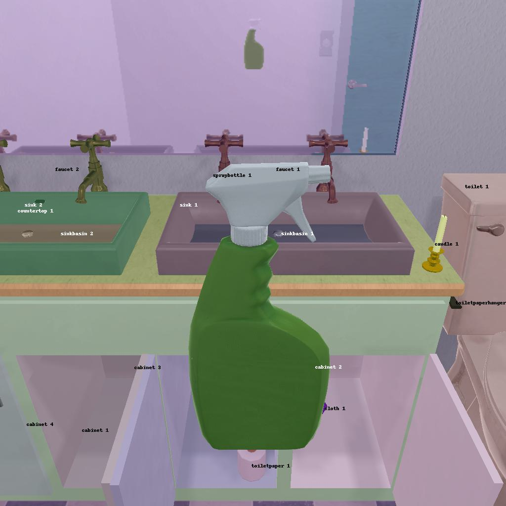

---------------------------------------------------------task: 9---------------------------------------------------------
--------------------------------------------------------------------------------------------------------------------------------------------------------------------
--------------------------------------------------------------------------------------------------------------------------------------------------------------------
Step:--------------------------------------------------------------------------14-------------------------------------------------------------------------------
----------------------------------------
VLM Prompt:
Image1:
**Instruction**
1. Analyze the provided image to identify all visible household objects, focusing on those relevant to the task description "put a soapbottle in toilet."
2. Use the analysis of the image and the task hint "The agent must find an object of the desired type, pick it up, find the correct location to place it, and put it down there." to answer the question: what is the most reasonable action in the choices for the task description "put a soapbottle in toilet"?
4. Decide and write the answer using the template: The answer is: (i): , where i is the real number. If there is no desired object in the image, search every place based on **Initial Observation** to find the object. And if no one is exactly correct, choose a similar answer.
**Initial Observation**
You are in the middle of a room. Looking quickly around you, you can see bathtub (1), bathtubbasin (1), toilet (1), cabinet (1-4), sink (1-2), countertop (1), sinkbasin (1-2), toiletpaperhanger (1), towelholder (1), garbagecan (1), handtowelholder (1)
**Answer Choices**
(1): go to bathtub 1
(2): go to bathtubbasin 1
(3): go to toilet 1
(4): go to cabinet 2
(5): go to sink 1
(6): go to sink 2
(7): go to countertop 1
(8): go to cabinet 4
(9): go to sinkbasin 1
(10): go to sinkbasin 2
(11): go to toiletpaperhanger 1
(12): go to towelholder 1
(13): go to garbagecan 1
(14): go to handtowelholder 1
(15): open cabinet 3
(16): close cabinet 3
(17): put spraybottle 1 in/on cabinet 3
(18): examine spraybottle 1
(19): examine cabinet 3
**Answer**
Let's think step by step by following the instructions.
----------------------------------------
----------------------------------------
Original Response:
The task is to "put a soapbottle in toilet." Looking at the image, there is no object labeled as "soapbottle," but there is a "spraybottle 1" on the sink 1, which is similar and might be mistaken for a soapbottle. Since "spraybottle 1" is the closest object resembling the desired soapbottle, it's reasonable to assume that it might be the object to be used for the task.
According to the initial observation, the toilet is labeled as "toilet 1." Therefore, the most reasonable action is to take the spraybottle (which we are assuming is the soapbottle for this task) and go to the toilet to place it there.
The answer is: (3): go to toilet 1
----------------------------------------
----------------------------------------
>>> Refine Original VLM Response and Get Pure Action: go to toilet 1
----------------------------------------
-----------------------------------------------------------------
Running time: 7.288637161254883 seconds
Total Money: 2.862630000000001
-----------------------------------------------------------------
-----------------------------------------------------------------
Text Observation:You arrive at loc 2. On the toilet 1, you see a faucet 1, a toiletpaper 1, a scrubbrush 1, a cloth 1, a plunger 1, a toiletpaper 2, a cloth 2, and a towel 1.
-----------------------------------------------------------------
UNSUCCEED